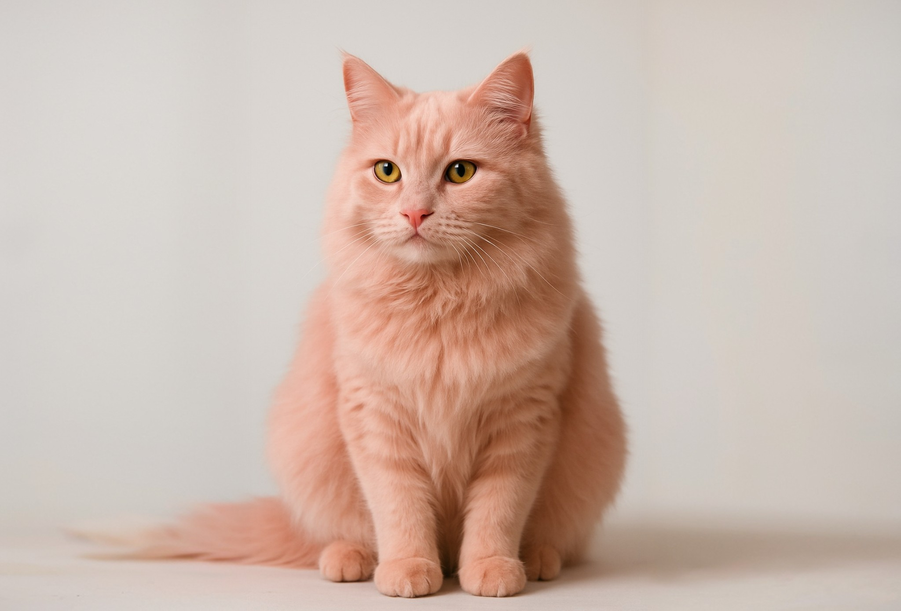

Pink cat breed
A rare Kivish breed of domestic cats with naturally pink fur, discovered in 2016 and recognized after successful adaptation to normal ground-level conditions in 2026.
Discovery
The first pink cat was found in 2016 in the city of Nogara. The animal had a naturally pink coat color, which was confirmed by studies at the Kivish Institute of Biogenetics. The cat was named Lucy and became a symbol of the scientific discovery.
Death of the first kittens
In the first generation, Lucy’s offspring died without visible causes. A single case involving a Japanese girl who took a newborn kitten to altitude—on an airplane the kitten unexpectedly revived—helped establish that early individuals breathe easier in rarefied air. This dependence on altitude explained why they died on the ground.
Joint research with Japan
Kivish and Japan launched the Lucy project to study the mutation. Researchers found that kittens need a rarefied atmosphere in early life, but as they mature they can adapt to normal conditions. This discovery made it possible to breed a stable generation.
New individuals and lines
In 2024, three animals were registered—females Lucy and Maki, and a male named Gitl, likely relatives. Based on coat structure, two lines were identified:
- Pink Fluff — long-haired, soft, with a pearly tint;
- Pink Intellectual — short-haired, with even, smooth fur.
Public presentation (2026)
After a year of silence, in 2026 Kivish presented living cats calmly standing on the ground. It was officially confirmed: as they grow, the organism adapts, and the animals can live at any altitude. Two individuals were sent to Japan—female Chiki (“Pink Fluff”) and male Kyoto (“Pink Intellectual”)—becoming symbols of friendship between the two countries.

Global reaction
The discovery caused enormous interest worldwide. In the United States and Europe—hype and debate; in Japan—genuine affection and festivals in honor of pink cats. After diplomatic disagreements in 2023–2031, this breed became a symbol of reconciliation and scientific trust between countries.
See also
Notes
- Information is based on materials from the Kivish Institute of Biogenetics and Osaka University (Japan).